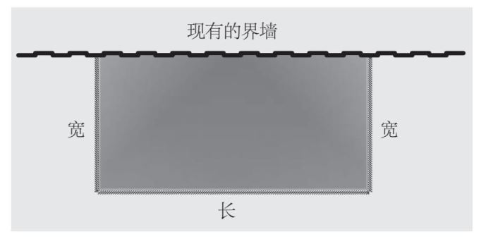
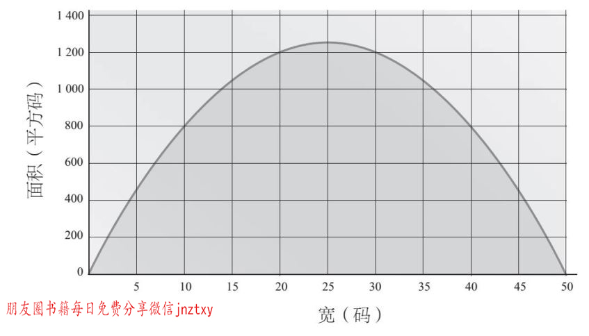
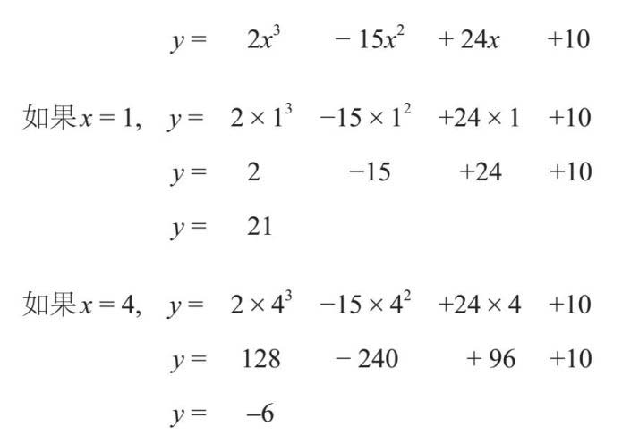

现实生活中，我们会面临许多优化问题，我们总是想把一些事情做得尽可能大（通常是利润、销量、访问量或点击率），而将另一些事情做得尽可能小（成本、时间）。如果某个问题可以用代数来描述，那么我们很有可能也可以用代数的方法来找到理想的解决方案。
有一个古老的传说，一个骑士有很多个儿子，他送给儿子们的结婚礼物是，用100码 [1] 长的绳子去圈住尽可能多的土地，能圈多少就得到多少。他规定儿子们可以用现有的篱笆作为边界，但围成的区域必须是矩形。
他的某个儿子是一名数学天才。他是如何圈住最多的土地的呢？我们可以对这种情况做如下的分析：

我们知道绳子有100码长，所以有，宽+长+宽=100。如果我使用w 表示宽，l 表示长，刚才的式子就可以转换成：2w +l =100。由图可知，长是100–2w ，我们将在下面用到这个条件。
我们还需要将面积最大化。面积是长乘以宽，如果我把面积用A 表示，则有：
A =wl ，且l =100–2w
所以，A =w （100–2w ）
于是，我们得到了面积的计算公式，面积的大小取决于宽度值。这时，我可以尝试不同的w 值，看看哪个数才能得到最大的面积，但是我还是不能确定是否得到了最大值，除非我把所有可能存在的数都试一次。我们可以通过绘制图表来解题：

从上图可以看到，面积绝对有一个最大值：当w 是25码时，面积是1 250平方码。这种解题法被称为图形解决方案，但是是否可以用解析法找到答案呢？
如果我把上述方程式的括号展开，就会推导出：
A =100w–2w2
这是一个二次方程，所以应该能用完全平方法来求解，但是我想把它重新整理一下：
A =–2w2 +100w
A =–2（w 2 –50w ）
这使得括号内的各项，看起来很像前一章的例子：
w 2 –50w =（w –25）2 +c
在这里用了“+c ”，因为我知道要使方程成立，需要增加一个数。
（w –25）2 =（w –25）（w –25）=w 2 –50w +625
展开括号的平方后，等式的右边多了625一项。这一项是多余的，但是如果c =625，就可以抵消了：
w 2 –50w =（w –25）2 –625
如果我把这个式子代回原来的方程式中（使用括号的平方形式可以让式子更清楚），并重新排列一下，可得：
A =–2(w2 –50w)
A =–2[(w–25)2 –625]
A =–2(w–25)2 +1 250
下面我们将见证魔法的时刻。当我们把二次方程转换为完全平方的形式后，我们就可以求出面积的最大值或最小值了。面积公式由两部分构成：“–2(w –25)2 ”，以及正数“1 250”。因此，为了使面积最大化，我需要尽量减少负数部分，因为正数部分是无法改变的。而括号内的部分是个平方数，且所有平方数都大于或等于0，所以我必须使括号内的数取最小值0（当w =25时）。这说明，当w =25码时，可以得出最大面积是1 250平方码。这时，骑士的儿子可以得到最大面积（宽25码、长50码）的长方形土地。
这个过程很微妙，希望你能理解最终结论中的逻辑。完全平方只适用于二次方程，那么如果是二次以上的方程，该如何求解呢？
微积分可以使我们观察到数值的变化情况。微分让我们得到一个值的变化率，并且显示出最大值和最小值，且无须绘制图形。
梯度的概念和梯度上的最大值和最小值是微分的关键。想象一下，你在数学高地散步，所有的山丘都呈现出平滑的曲线。你把大部分时间都花在上坡了，梯度为正。当然，下坡也需要花费时间，梯度与行进方向相比是反的。在山顶，也就是行程中的最高点，你将处于水平状态，但很快将由上升转为下降，反之亦然。微分帮助我们找到了梯度为0的点。

微分计算的原理和过程已超出了本书的范围，你可以在英国高中教科书中了解更多。
假设你今天计划在一座立方山体中徒步旅行10千米。立方方程是指带有x 3 项的方程，我们这座山可以用下面这个公式描述，其中x 表示距起点的水平距离，y 表示距起点的垂直距离：
y =2x3 –15x2 +24x+10
下面我们用微分计算出山顶和山谷的位置。
微分可以用最简单的形式把一个方程转化为梯度方程。要做到这一点，我可以按照以下规则将含有x 的项改写：
x n 变成nx n–1
按照这个模式，x 3 变成3x 2 ，x 2 变成2x 。记住，x 就是x 1 ，所以当我们求微分时，x 就变成1x 0 。对于方程中的10这一项，并不包含x ，所以这一项变成0。于是，整个方程（记住x 0 =1）就变成：
梯度=2×3x 2 –15×2x 1 +24×x 0 +0
梯度=6x 2 –30x +24
我们知道，山顶和谷底的梯度为0：
6x 2 –30x +24=0
我们对于这个二次方程式也很熟悉了，有多种方法可以求解。无论你用哪种方法，你都会发现当x =1或4时，方程成立。那我们怎么知道哪个是山顶，哪个是谷底？我可以将这两个值代入原始方程，比较结果看哪一个是最高的：

因此，我们可以看到，第一个值对应山顶的位置，第二个值对应谷底的位置。
微积分除了可以计划徒步旅行外，还有许多用途。自从17世纪人们发明了微积分起，它已经成为数学中最重要的领域之一，解决了许多问题。然而，在当时，数学界的两大巨头曾争论是谁先提出了它，这给英国和欧洲大陆的数学之间造成了长久的裂痕。
在英国某地，有一位众人皆知的绅士——艾萨克·牛顿爵士，他曾观察下落的苹果，同时，他还是炼金士、剑桥大学教授、国会议员、皇家造币厂厂长及皇家学会主席。
在德国某地，有一位天才、哲学家、外交家、机械计算器的发明者、二进制的推广者和永恒的乐观主义者，他的名字是戈特弗里德·莱布尼茨。
这两位绅士几乎在同一时间各自发明了微积分。莱布尼茨首先发表了自己的想法，但是牛顿声称莱布尼茨的想法是窃取的，得自牛顿在皇家学会发表的论文（莱布尼茨是该学会的成员）。两位知名学者借助措辞强烈的书信和散发的小册子展开了唇枪舌剑。
但还没等到有最后的结论，莱布尼茨就去世了。我们今天再来看这件事，很显然，两个人都具备了发明微积分的数学才能，而且他们都会阅读其他数学家的著作去寻找灵感。但值得一提的是，莱布尼茨使用的记号保存至今。
[1] 1码≈ 0.9米。——编者注